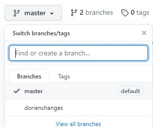
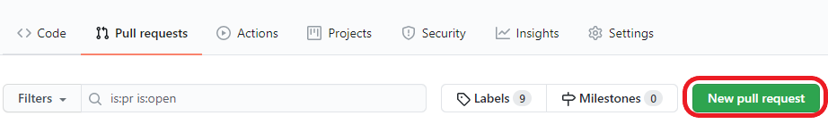

Version control with git(hub)
What are git & github?
- Git is a version control system: it tracks the history as you change files. More specifically, it tracks who made which changes and when. It allows reverting files to a previous state. Note that it is possible to work on git projects locally without ever using github.
- Github is a platform that you can use to collaborate on projects that use git. It additionally allows for threaded discussions (issues), pull requests (see below) and several great apps. Please note that there are also other platforms that work similarly, such as GitLab, BitBucket or SourceFourge.
Git and Github are most suitable for working with relatively small files. While originally used for code/software, you can use it for other types of small files as well, such as documentation.
Why should I use git(hub)?
- Git is used a lot all over the globe and is free to download and use via several interfaces
- You will always be able to revert your errors - or those of someone else
- You can report which version of the files you have used for which publication. Even better, github allows exporting a snapshot (version) of your github repository (folder with files) to Zenodo, meaning you can publish your version used and give it a citable DOI.
- Github also has several other great functions, such as making a website out of your repository (such as this lab wiki!)
Installation
- Create a Github account
- Install git locally. If you don't want to use the command line, also download a GUI such as RStudio or GitKraken)
Note: if you want to work with git in the command line on Windows, I can highly recommend using the Ubuntu app (the Linux Subsystem for Windows, downloadable via the Windows store), which may cause fewer Windows-related errors.
The git workflow
When working on a git project (within a folder called a git repository), you will always perform the following steps:
- Make changes to some file and save them like you normally would
- Stage the changes: select which files you want to make a snapshot of (this step is most explicit if you work in the command line)
- Commit the changes: make a snapshot of the changes made so far. A commit (snapshot) is always accompanied by a commit message explaining what changes were made
Any commit gets a specific identifier that can be used to reverse (undo) the commit.
Some stage- and commit-related commands
- Check which files are changed but not yet staged or committed:
git status - Stage a file (tip: use the tab to use autocompletion):
git add filename - Stage multiple files:
git add filename1 filename2 filename3 - Stage all unstaged files in the workspace:
git add -A . - Commit the change(s) you staged:
git commit -m "Change x and y to z" - Commit all (staged and unstaged) change(s) made in the workspace:
git commit -a -m "Change x and y and z"
Branches
A git repository can exist in multiple “versions” which are called branches. There is always a “master” branch, which you should consider the clean branch. Besides that, you can create other branches that are meant to make your own changes, or try something different without dirtying the clean (master) version. After you have made changes in your own branch and you think they should be incorporated in the master branch, you can then merge your branch with the master branch.
Some branch-related commands
- Check which branch you are working on now (and list which branches there are):
git branch -v - Change branches:
git checkout branchname - Create a new branch:
git checkout -b newbranchname
Workflow on github
On Github, the workflow is a bit more extensive, because often you are collaborating and do not want others to just start editing the master branch right away. There are multiple methods to collaborate on a project, but we recommend the following, assuming that there is already a repository for the project and you want to contribute:
- On the repository page on Github, fork the repository: this creates a copy of the repository on your own Github account that you have full access to.

- In your forked (copied) Github repository, create a new branch for the changes you are about to make with a short but comprehensible name, e.g. “dorienchanges”.
 - If you want to edit files locally, clone your repository to your local PC, creating a folder in your file explorer (the contents of which can change according to which branch you are on!).
- Via the command line:
git clone https://github.com/UserName/RepositoryName.git - Via Rstudio, see this link
- Edit the files you want to edit and commit the changes (making a snapshot; include a comprehensible commit message!)
- You have now committed changes locally, but they are not yet visible in your remote repository, i.e., the online github repository on your account. In order to get the commits you made locally to be visible online, you need to push them to your remote repository on Github.
- Via the command line, note that the repository on your account is usually called "origin":
git push origin branchnameonwhichyouworked - Via Rstudio, see this link
- Now the changes are visible in your own account, but not in the main repository. In order to get your changes into the main repository, you need to do a pull request on Github. This is a request to the owners of the original repository to merge your branch with (one of) theirs. Once merged by the owners, you are often prompted to remove your own branch (which is not necessary if you are planning to make more changes later).

Keeping your local copy (clone) up to date
If you are working on a project with many collaborators making changes, the odds are that your own fork (online copy) and/or clone (local copy) are becoming out-of-date quite fast. Therefore, it is recommended to update those copies each time before you start making changes yourself, so you are working on the most recent versions of the files.
- In your clone (offline), you can set up the owner’s repository as the "upstream" repository and then pull all commits from the upstream repository to your local PC
- Setting up the original repository as the upstream:
git remote add upstream https://github.com/ownername/repositoryname.git - Pulling changes from the upstream repository:
git pull upstream branchname - See this page when you use RStudio
- To update your online version of the repository, simply push the changes (e.g.,
push origin masterafter pulling from the upstream
Resources
For every piece of software, remember that google is your best friend. Or use one of the following other resources:
- Also a very comprehensive git guide by The Turing Way
- More info on the Git workflow (especially useful if you are going to use git via the command line)
- Github guide: git handbook (duration ca. 1 hour)
- Using Git(hub) with Rstudio: https://happygitwithr.com/
- Introduction on Github by Ana Martinovici
- Git terminology: https://git-scm.com/docs/gitglossary
- More terminology: https://the-turing-way.netlify.app/reproducible-research/vcs/vcs-resources.html#definitions-glossary
- If you want to use Gitlab instead, here are the materials of a comprehensive course (ironically, on GitHub)